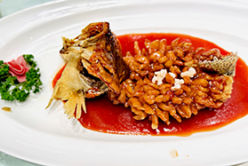

中国八大菜系之江苏菜
-

松鼠鳜鱼
江苏经典名菜，以鳜鱼剔骨切花刀，油炸后形如松鼠蓬松，外脆内嫩，淋糖醋茄汁，酸甜适口，形色俱佳，寓意吉祥，展现刀工与火候的精妙融合
-
金陵盐水鸭
南京非遗美食，选用秋季桂花鸭，经盐卤腌制、清卤复腌，皮白肉嫩，咸鲜醇香，肉质细腻无腥，冷食尤佳，承载六朝古都饮食文化。
-

清炖蟹粉狮子头
淮扬三头宴之首，肥瘦猪肉手工剁蓉，掺蟹黄蟹肉团成拳头大肉丸，砂锅慢炖数小时，汤清味鲜，入口即化，蟹香点睛，尽显“以汤养味”之精髓。
-
霸王别姬
典故名菜，甲鱼（霸王）与母鸡（虞姬）同炖，胶质丰润，汤浓味鲜，肉质酥烂，以“生死同烹”喻楚汉传奇，滋补养生，宴席压轴。

-
大煮干丝
扬州早茶代表，豆腐干片薄如纸，切丝细可穿针，配老鸡、火腿、虾仁高汤煨煮，干丝吸汁柔韧，汤鲜味厚，清淡中见真章，被誉为“淮扬第一素”。
-

无锡酱排骨
锡帮菜甜咸典范，精选猪肋排以红曲米、黄酒、冰糖文火焖烧，酱色油润，骨酥肉烂，甜中透咸，酱香浓郁，诠释江南“浓油赤酱”的烟火气。
-
软兜长鱼
淮安长鱼宴头牌，取笔杆粗活鳝脊背肉，热油滑炒，佐蒜末、黑醋、胡椒粉，鳝肉滑嫩如绸，酱汁裹挟酸香，无骨无刺，鲜香盈口，曾为乾隆南巡贡菜。

-
炖生敲
南京传统鳝肴，活鳝去骨拍松，油炸锁鲜后与五花肉、蒜瓣砂锅慢炖，鳝段酥软入味，肉香蒜香交融，酱汁醇厚，民间赞其“金陵鳝味之冠”。